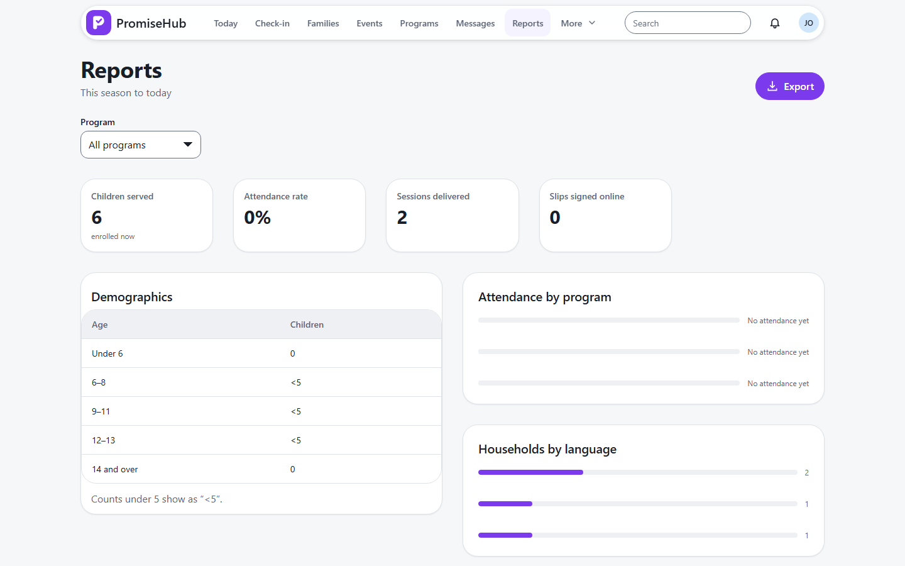
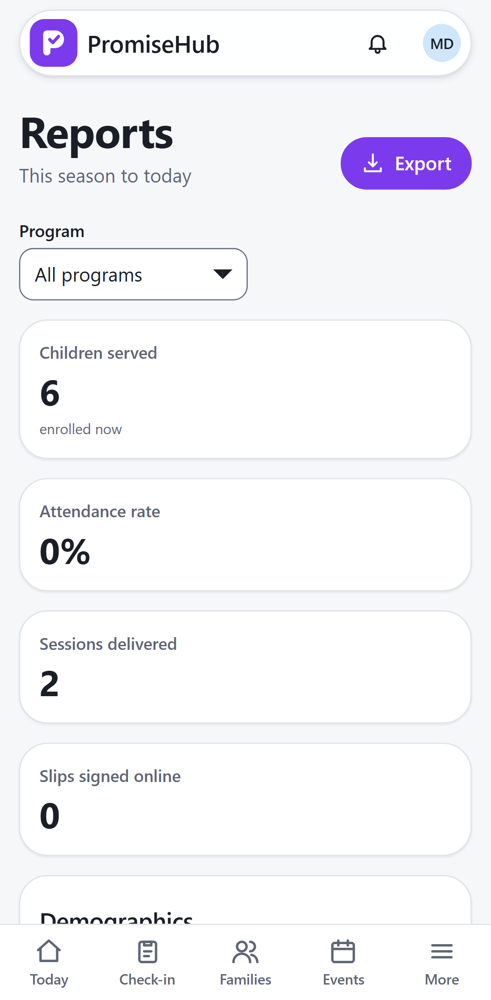

PromiseHub · Video 37
Produce grant reports
Funder numbers without retyping a thing
Funder numbers without retyping a thing
Tutoring only, then a CSV.


| Case | Answer |
|---|---|
| Site lead, count of 3 | <5 |
| Export after 8 days | 410 |
| Youth worker | 403 |
| Reports off | 404 |
Next: complete a survey